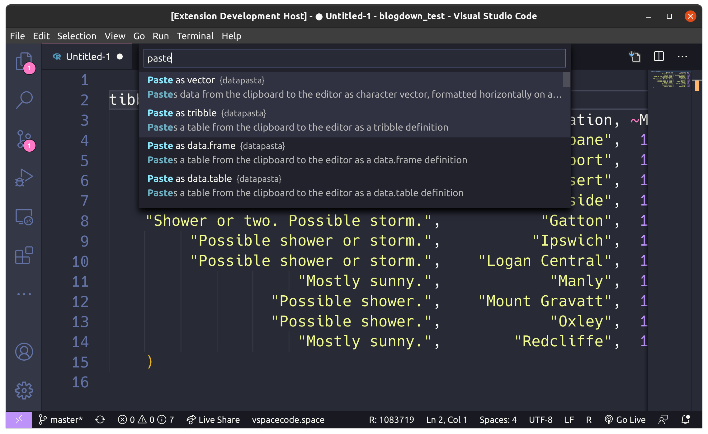

Technical details and select highlights of my project to bring RStudio addins to VSCode.

I recently completed a project to add RStudio addins to the Visual Studio Code R extension. In this post I explain the technical sleight of hand that makes this work, and share some of my select highlights from the project.
Most people who follow me online know that I use Spacemacs and ESS to write R. A few things changed recently that made VSCode radically more appealing to me at work, where I am forced to use Windows:
So I started experimenting to see how close I could make VSpaceCode feel to my Spacemacs setup. The first major sticking point was an R package of mine I use many times daily: fnmate
To use fnmate your editor needs to interface with your R session to pass back the context of your document around your cursor. R does the magic once it has that context.
Emacs and RStudio facilitate this in different ways, but ultimately they both allow you execute code on data taken from the text editor and shove the result of that into an R function called in your R session. 2
VSCode was without this ability. So I thought that to implement a binding for my beloved fnmate my options were:
fnmate merged into the R extension.And I guess I was mulling over what unsatisfying options these were when I realised that what the VSCode R extension really needed was something like the RStudio API - HOLD ON. Can I port the RStudio API? Can I make fnmate, datapasta and other popular addins work with VSCode with no changes to their code?! I think I know how to do this!
It was like as soon as the lightning bolt struck I knew I was not going to be able to stop myself from doing this.
I was pretty jazzed about the idea and it occurred to me that it was so good that I was probably not the first person to have it. A GitHub search revealed that my intuition was correct: In May of 2020, VSCode-R extension maintainer Andrew Craig had created an issue discussing the possibility.
When I read through the discussion I saw that it had kind of stalled out because the maintainers were worried about RStudio’s reaction and legal issues. They’d resolved to contact RStudio before making any moves.
The implementation I had in mind side stepped of their initial legal concerns, and I was pretty confident that the RStudio team I knew, the great people that I had met, would not be bothered.
I offered to contribute and was invited to start working on the idea.3 Once I had a proof of concept - 1 working API call - I decided to email the authors of {rstudioapi} to let them know what we were planning to do.
The RStudio response was all class. You can see for yourself in the issue thread. JJ Allaire wrote back with encouraging words, a heads up on future API directions, and an offer to talk about the API. Kevin Ushey did likewise, filling out some more detail on future plans, and invited questions and feedback on the API. When I did have a question about the API, Kevin answered it quickly.
This is RStudio walking the walk of being a company that works in the community’s interests. Diversity is good. Friendly competition is good. It’s really impressive stuff, and it’s a part of this story that I really wanted to share, because it meant I could really dive into the work unencumbered by worry about how it would be received.
Now we get to some fun stuff. How is it that I can call: rstudioapi::getActiveDocumentContext() from within an R session in VSCode and get back the context of my VSCode active text editor window?
The trick is one that is often used the testing context, there it’s known as ‘mocking’. In other context it can be called ‘duck punching’ or ‘monkey patching’:
Within your VSCode sessions only, I’ve replaced the definition of the getActiveDocumentContext function in the rstudioapi name space, with code that talks to VSCode instead of RStudio. The incredible thing about this to me, is that even though it feels a bit dodgy, everything you could want to have to do it is built into the R language.
The first piece is a function called assignInNamespace which allows us to do this:
assignInNamespace("getActiveDocumentContext",
function(...) {
print("Duck punch!")
},
"rstudioapi"
)
Calling rstudioapi::getActiveDocumentContext() would now return “Duck punch!”.
The second piece allows us to make that assignment happen, immediately after the rstudioapi namespace gets loaded into your R session, whenever, if ever, that may be. It’s a function called setHook:
rstudioapi_hook <- function(pkgname, pkgpath) {
print("Running your package onLoad hook...")
assignInNamespace("getActiveDocumentContext",
function(...) {
print("Duck punch!")
},
"rstudioapi"
)
}
setHook(packageEvent("rstudioapi", "onLoad"), rstudioapi_hook)
rstudioapi::getActiveDocumentContext()
[1] "Running your package onLoad hook..."
[1] "Duck punch!"So we’re asking R to only perform the duck punching if the user actually loads the {rstudioapi} namespace, which will happen when any function in it is called 4. So if the user never calls the API we never do anything spooky.
It’s also handy to be able to patch the API functions selectively, since it allows us to keep rstudioapi functions that don’t talk to the IDE unchanged, e.g. rstudioapi::is.document_range, and we can call those in our adapted versions.
The VSCode-R extension already implemented a one-way communication channel between the user’s R session and VSCode for signalling custom rendering behaviour of plots, shiny apps, web pages etc. So my main challenge was to implement the return protocol so that VSCode could send data back to the R session in response to rstudioapi requests. This had to be written in Typescript using the VSCode API.
The way in which the communications worked was quite interesting to me - I guess I assumed it would be some kind of fancy web socket protocol thing. Actually it’s pretty lofi, based on files. It worked like this:
request.log and request.lock. In VSCode/Typescript land a file watcher process is attached to the lock file that triggers a callback function whenever the lock file is updated.request.log and then writing the current timestamp to the request.lock.My implementation for the return path copied these ideas. Once you make an rstudioapi call from R, the R sessions blocks, checking a response.lock file every 100ms until an update appears and response data is read from response.log.
One mistake I made initially was that I thought some API calls might be able to be asynchronous, for example inserting text into a document - it seems like it could done without a response back to R. But I soon learned in testing that there are addins out there that blast the rstudioapi with a stream of function calls 5, and I needed to make sure the all changes in VSCode had been applied before I allowed a new request to be written, otherwise request data might be overwritten without being handled.
By far the biggest challenge was trying to make VSCode behave exactly as per RStudio. Part of the issue is that the two applications have fundamentally different models.
In VSCode for instance, terminals and text editors are different things. You have an active text editor and an active terminal, determining which one of those things has the user’s focus is not a facility provided by the API.
RStudio, on the other hand, lets you treat everything as a ‘document’, and you can easily the context of the active document that has the user’s focus.
But the hardest bit really is that while both APIs have reasonable documentation for the average end user, it suddenly seems lacking when you’re trying to make one program behave exactly like another - only a small portion of each program’s behavioural extent is documented. There was a lot of experimentation and probing at the limits of each application’s conventions to establish what it could handle.
I want to give special mention to rstudioapi::insertText() which is quite possibly the most loosely specified function I have ever encountered. It was my nemeses on this project. This is the function signature:
insertText <- function (location, text, id = NULL) {
}Insert text at location in document specified by id or active document. But this simplicity belies incredible complexity lurking beneath:
location can be:
text is not supplied. e.g. Allowing calls like insertText("some text") to work.text can be length 1 or length(location)location are all integers in the range [-Inf, Inf]! These need to be resolved to actual possible locations further down the line.Phew! There are a couple of hundred lines dedicated to emulating this function and its’ aliases alone.
Typescript is a statically typed Javascript-a-like that compiles to Javascript. I quite enjoy the language, but I found working without a REPL to be excruciatingly slow initially.
I was going:
And the compilation/build time, and repetitive nature of setting up state for a test was a drag. A couple of things I discovered:
vscode_1 that you can tinker with in the debug console.The maintainers of the VSCode-R extension have quite high standards for the code. Kun Ren gives unrelentingly thorough code reviews, which are actually a really valuable thing that I haven’t had a lot of in my software-writing career. It felt a little like a session with a code personal trainer. I realised I had been lazy in parts, or there were nicer ways of doing things that weren’t as complex as I had estimated.
I was quite sympathetic to this process. Asking people to take on 1000 lines of potential technical debt is a big deal. We’re playing catch with a loaded foot-gun - whatever precautions the catcher wants to take have to be respected.
It turned out that much to my embarrassment the foot-gun went off pretty much immediately!
When repository owner Yuki Ueda creates a release, it automatically flows through to VSCode users the next time they open VSCode. The PR was merged in the afternoon and in the evening I logged into my work machine to catch up on a task from a few hours earlier. My code fell in a heap at library(tidyverse) with an error that was painfully familiar, since I coded the message myself:
error: This `{rstudioapi}` function is not currenlty implemented for VSCode.WAT. I frantically tried to reproduce the bug on my personal laptop running Ubuntu and couldn’t. Ken Ren couldn’t reproduce it on Mac OS either. It seemed we had missed some Windows specific behaviour which I was the first to encounter on my Windows work machine.
In the midst of this, a colleague of mine who is studying and uses R, messaged me to let me know the bug had sent someone in his study group into a panic and he had bailed them out with a fork of the extension. I felt terrible!
Over the next couple of hours we worked out the issues and implemented a fix. We also made the {rstudioapi} emulation in VSCode opt-in for now with an option that must be set: options(vsc.rstudioapi = TRUE) - in case there are any other big showstoppers we haven’t seen yet.
In retrospect the option would have been a good idea from the start, I did think about it at some point, but I guess I got overconfident.
The bug itself is was quite interesting to me. When a user does library(tidyverse) for the first time in a session there is an on-attach hook that runs that prints a familiar fancy looking message:
This reproduction on my blog is not as colourful as the one we see.
This message makes heavy use of two packages for command line output: {crayon} and {cli}. Now the first time these packages are called in a session they fire off hundreds of lines of code designed to sniff details of your terminal and operating system, ultimately to determine:
On Windows only, {cli} ends up needing to know the version of RStudio you’re running, and it gets this via rstudioapi::getVersion. Up until this point I had shied away from spoofing an API version - that is my implementation would return TRUE for rstudioapi::isAvailable() but error if you tried to get the version or assert a specific version. This worked well for the dozen or so addin packages I tested.
There was no way around VSCode pretending to have an RStudio version for now to get tidyverse working. We shall see if this creates any issues.
So that’s been the highs and lows of this project. Certainly I learned a lot, and I thank the maintainers of the VSCode-R extension (Yuki, Kun, and Andy) for the opportunity, and JJ and Kevin from RStudio for their support.
Just today I used fnmate numerous times on an instance in AWS I had connected to using VSCode-over-SSH. I never actually tested this specific case, but VSCode is geared such that the remote development case is not something an extension author has to care that much about. Extremely satisfying!
Thanks to the Jack of Some YouTube channel↩
In Emacs that code is Lisp. In RStudio it’s R.↩
I’d made one PR for a small feature to the VSCode-R extension in the past, so I think that helped in this regard.↩
Or they do library(rstudioapi) - but this is discouraged by the {rstudioapi} documentation and doesn’t make heaps of sense↩
Thanks {remedy} and {sinew} ;)↩
If you see mistakes or want to suggest changes, please create an issue on the source repository.
Text and figures are licensed under Creative Commons Attribution CC BY 4.0. Source code is available at https://www.github.com/milesmcbain/website_distill, unless otherwise noted. The figures that have been reused from other sources don't fall under this license and can be recognized by a note in their caption: "Figure from ...".
For attribution, please cite this work as
McBain (2020, Oct. 22). Before I Sleep: Adding RStudio Addins to VSCode. Retrieved from https://milesmcbain.com/posts/adding-addins-to-vscode/
BibTeX citation
@misc{mcbain2020adding,
author = {McBain, Miles},
title = {Before I Sleep: Adding RStudio Addins to VSCode},
url = {https://milesmcbain.com/posts/adding-addins-to-vscode/},
year = {2020}
}